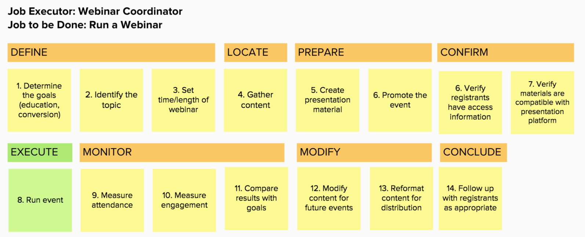
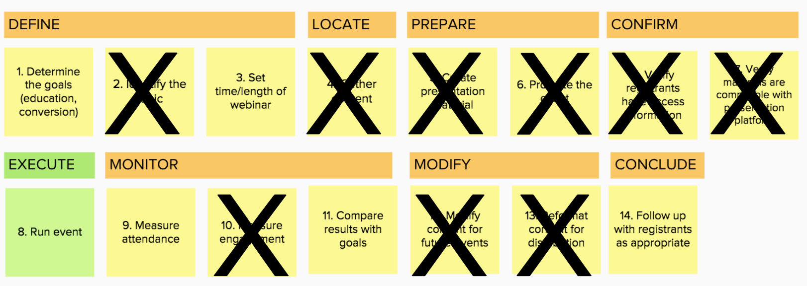
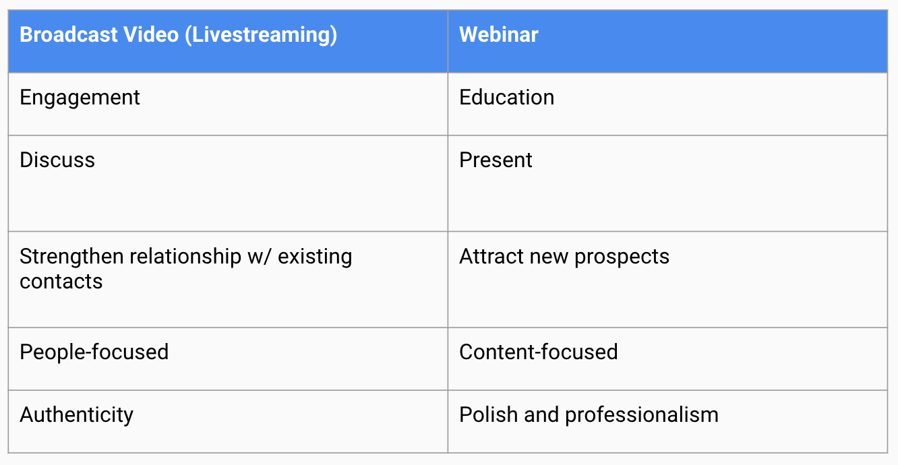

My Role
One day, a member of my innovation team mused over lunch "Do you think Facebook Live and Periscope are a threat to our webinar business? This seems like the Innovator's Dilemma".
The product team already had a backlog of proposed features, and looking a low-cost, inferior products wasn't a high priority. So we dug in, and used this to create our first Job Map following the Jobs to be Done - Outcome-driven Innovation framework.
Jobs to be Done seemed like a perfect fit for this project, as it has been positioned as the solution to Clay Christensen's Innovator's Dilemma. Rather than focusing on improving our product, we had to take a step back and better understand what our customers were trying to get done (and then focus on how we could help them do so better, faster or cheaper).
Our goals was to understand users’ mental models with regards to webinar and streaming video platforms. Did users of these two types of systems have the same jobs to be done? Did they consider them to be competitive solutions? Was this emerging trend a threat or an opportunity?
Background
Although we now know that Blab.im wasn't a threat (the service has since shut down), there was a time in 2016 where within a matter of months, live streaming video was everywhere. Facebook Live, Periscope, Meerkat and Blab.im rolled out free streaming video offerings, and they were taking off.
Marketers had long been using live webinars for marketing purposes, often paying upwards of hundreds or thousands of dollars to host an event. A quick glance at the interfaces of the two different types of services made it clear that webinar platforms were much more feature-rich and robust - but we couldn't help but wonder if that was really such a good thing?
Approach
Discovery
We conducted 12 interviews for this project:
- 4 ReadyTalk customers
- 7 Blab.im users
- 1 user of both platforms
When we first embarked on this initiative, we had also planned to talk to people who used Facebook Live for marketing, but the service was still very new and didn't have an established base of professional marketers using it yet. (Can you imagine? This was a few years ago, obviously..)
Job Map
We used a Job Map to help frame our conversations with our customers. Based on previous research, we knew the steps involved in conducting a webinar. For this research project, we focused our discussions on uncovering our customers' needs at every step of the process.
We went through each step of the map, seeking to uncover what makes each step time-consuming or tedious; what can go wrong during the step; what circumstances cause the step to be more difficult or challenging than usual? In addition to gathering this list of needs, we asked them to weigh the relative importance of each step, and how satisfied they were with their current solution.
I'll be honest here, this was our first attempt to run a research study following the Outcome-Driven Innovation structure, and we didn't quite get it right. Trying to ask people to quantify their satisfaction with each step during an interview was awkward, and ultimately we ignored that part of the research study. A few years later, I'm much more familiar with the process (including the fact that you want them to rate the relative importance and satisfaction of the needs, NOT the steps - in a qualitative survey). But we were doing our best.
We then spoke with people using Blab.im for marketing, and attempted to use the same Job Map. It ... didn't work. Their process was much simpler. 
This was interesting.. but also slightly concerning. One of the tenets of Jobs to be Done Theory is that customers will choose solutions that get the Job Done better, cheaper, faster .. or in fewer steps. If users perceived that they were trying to get the same Job Done with livestreaming as with a webinar platform, then this seemingly inferior product was actually offering them a better experience.
Which brought us all the way back to one of our initial questions: did these two customer segments have the same Job to be Done?
Ultimately, we determined that they did not. Although there were many similarities to the technology and delivery platforms, users had dramatically different goals and success criteria when choosing to hire one product versus another.
Highlights

Livestreamers
“You can develop relationships with people you discovered online. I really like the ability to bring in the audience and how easy it is. There's no downloading or anything like that, it's really simple.””
Livestreamers
“In a dream world, it would be audio/video with recording abilities and the abilities to push it out to other platforms like Facebook Live”
Livestreamer
“Stability is the biggest problem. Just last week it froze in the middle and we lost everything.”
People hire webinars and live streaming platforms to get different Jobs Done
Despite the similar technological and delivery systems, users have very different goals and success criteria when they hire one platform vs the other.
For formal presentations, webinar coordinators valued the reliability and control of a webinar platform
Livestreaming via an established platform (twitter, facebook) made event promotion and registration simpler for participants
Engagement features and the discussion format of livestreaming encouraged real-time attendance moreso than informational webinars

Dual-User
“I need to be sure everything goes smoothly. I can’t risk the platform going down or hiccuping when I’m on it”
Dual-User
“Livestream platforms don’t let me collect the email addresses of participants: that’s why I hold webinars”
Dual-User
“With Webinars, there's a notion of the green room, but with Blab you can't have that. You can't be in the Blab, without it being live. If you're starting early, you're going to be live and you can have people stumbling in while you're trying to work your issues out.”
Dual-User
“At the end of the day, we're still concerned with generating leads and awareness. As much as we like authenticity, we're trying to find innovative ways to market on platforms when people are spamming every channel.”